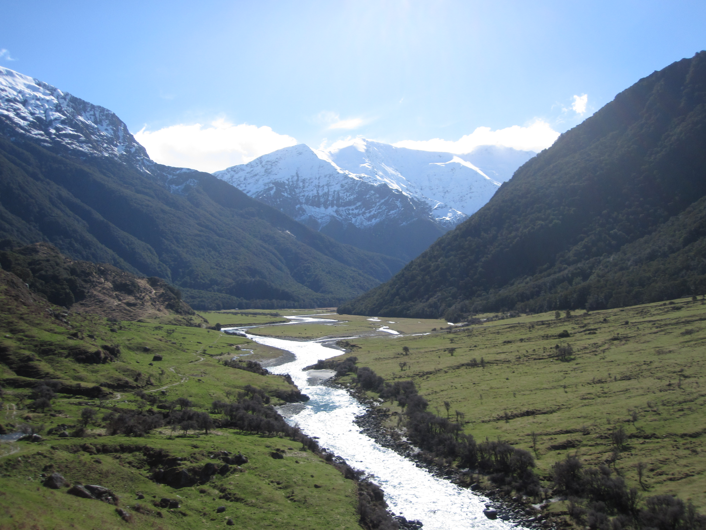
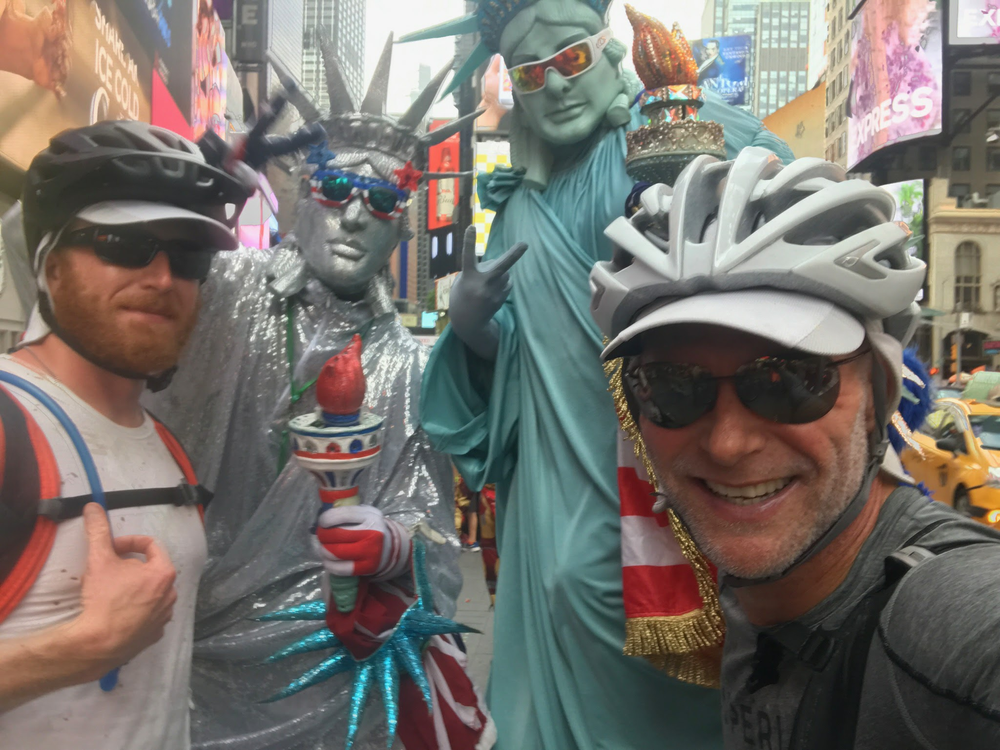

Dedicated to solving complex problems and elevating projects.

Crafting responsive, user-centric front-ends with HTML, CSS, and JavaScript

Engineering efficient and scalable back-end logic using Python

Developing robust enterprise solutions with C#, .NET, and MVC

Managing data integrity through Database Design and SQL
Leveraging high-performance systems with C and C++
